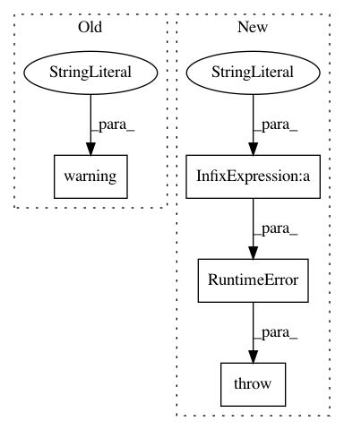

21df1c732d01ef6a24605ce7bf551af584016829,opennmt/training.py,Trainer,__call__,#Trainer#Any#Any#Any#Any#Any#Any#Any#Any#,50
Before Change
tf.get_logger().warning("Model already reached max_step = %d. Exiting.", max_step)
return
if evaluator is not None and evaluator.should_stop():
tf.get_logger().warning("Early stopping conditions are already met. Exiting.")
return
self._gradient_accumulator.reset()
self._words_counters.clear()
After Change
https://www.tensorflow.org/api_docs/python/tf/train/ExponentialMovingAverage.
if max_step is not None and self._optimizer.iterations.numpy() >= max_step:
raise RuntimeError("The training already reached max_step (%d). If you "
"want to continue the training, you should increase the "
"max_step value in the training parameters." % max_step)
if evaluator is not None and evaluator.should_stop():
raise RuntimeError("The early stopping conditions are already met. If you "
"want to continue the training, you should update your "
"early stopping parameters.")
In pattern: SUPERPATTERN
Frequency: 3
Non-data size: 4
Instances
Project Name: OpenNMT/OpenNMT-tf
Commit Name: 21df1c732d01ef6a24605ce7bf551af584016829
Time: 2020-09-18
Author: guillaumekln@users.noreply.github.com
File Name: opennmt/training.py
Class Name: Trainer
Method Name: __call__
Project Name: apache/incubator-tvm
Commit Name: fcead9f2025cacf39edf4ff9ae8ca4680e5aed39
Time: 2020-12-09
Author: comaniac0422@gmail.com
File Name: python/tvm/relay/op/strategy/generic.py
Class Name:
Method Name: deformable_conv2d_strategy
Project Name: catalyst-cooperative/pudl
Commit Name: 5770207ca3dc4a45c34a323922ae6d3100028c53
Time: 2020-03-30
Author: mailbox@pablovirgo.com
File Name: src/pudl/workspace/datastore.py
Class Name: Datastore
Method Name: download_resource